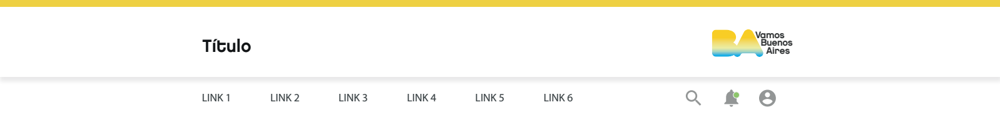
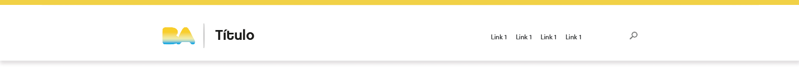
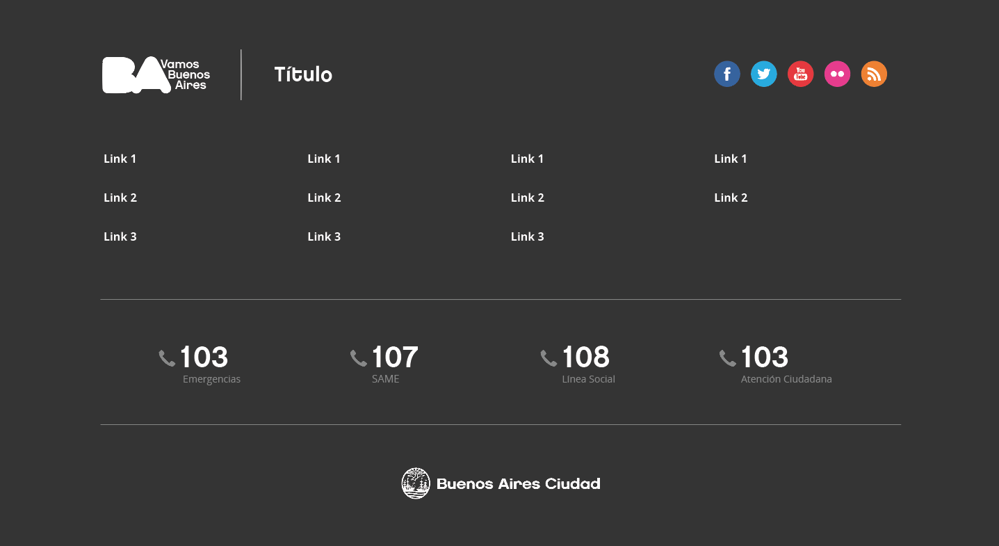

Formar parte de los sitios de BA
(+) Importante
Todas las páginas y sitios deben respetar los puntos mencionados en este checklist para formar parte de la familia BA. Si tu sitio o página web no utiliza alguna de las formas de header y footer provistas o no responde a los requerimientos básicos y obligatorios de tipografía y color, realizá los ajustes correspondientes para poder llevar a cabo la revisión solicitada.
¿Tenés una idea para un sitio nuevo dentro de Buenos Aires o ya lo tenés armado y necesitas una revisión?
Esta guía contiene los lineamientos básicos que deben estar contemplados en el diseño de tu página para que forme parte de la familia de los sitios de Buenos Aires.
Tener en cuenta estos estilos y elementos mínimos va a agilizar tu proceso de trabajo y la revisión por parte de la Gerencia de Experiencia de Usuario parte de la Dirección de Ciudad Inteligente.
¿Qué lineamientos debe respetar mi página para pertenecer a la familia de sitios de Buenos Aires?
Header y Footer institucional
Cada sitio debe utilizar, según corresponda, uno de los siguientes headers en los cuales la marca de Buenos Aires, la marca secundaria (la de tu sitio) y los links tienen un lugar predeterminado y responde a estilos correspondientes a la identidad de Buenos Aires y Bastrap.
Header
Caso 1 Última actualización Abril de 2017
Caso 2
 Última actualización Abril de 2017
Cuando la marca lo requiera y sea necesario agregar un color en el header este lo hará formando un gradient con el amarillo (#fdd306)
Footer
El footer tiene ciertos requerimientos obligatorios, e independientes del sitio en el cual se utilice, y otros flexible que pueden o no incluirse.
Los requerimientos obligatorios son:
• Uso del logo BA con la leyenda Vamos Buenos Aires. (+)
• Fondo color (+)
Elementos flexibles:
• Pueden modificarse los links,
• Los botones de las redes sociales pueden redirigir a las distintas redes de cada proyecto.
A continuación se suma una captura del diseño del footer actual para que sirva de ejemplo para las siguientes propuestas.

Última actualización Abril de 2017
Descargas disponibles
Los archivos html y css y para poder maquetar o diseñar el header y el footer de tu sitio en versión escritorio y mobile, se encuentran disponibles en este link
Descargá la carpeta con los .png de los distintos logos de Buenos Aires y sus aplicaciones, disponible en este link
Fuentes y usos tipográficos
Todos los sitios de Buenos Aires utilizan dos familias tipográficas: Open Sans y Chalet.
Chalet
Se usa en los textos display, en tu sitio es la fuente correspondiente a las etiquetas h1, h2 y h3.
Adjuntamos las variantes de estilo y tamaño de la aplicación de la tipografía Chalet en las etiquetas más utilizadas:
h1. Títulos Buenos aires
h2. Títulos Secundarios
h3. Subtítulos
Open Sans
Se usa para los textos de lectura
En el maquetado de tu sitio, será la fuente utilizada en las siguientes etiquetas: h4 y p
Adjuntamos las variantes de estilo y tamaño de la aplicación de la tipografía Open Sans en las etiquetas más utilizadas:
h4. Subtítulos
p. Textos de lectura
Paleta cromática
Bastrap dispone de una amplia paleta en dos versiones, una principal y una ampliada que recomendamos utilizar sólo en casos necesarios.
Cabe recordar que el amarillo (#fdd306) y el celeste (#19c3e3) son los colores marca, por lo que su presencia en el sitio es importante para construir la identidad del sitio y su pertenencia a la familia de iconos de Buenos Aires.
Colores claros
#e76056
#f3a32d
#fcda59
#2ebc98
#99c25f
#2ebc98
#19c3e3
#0389d1
#3e4f5e
#9d6db6
#f562a2
Colores oscuros
#e74c3c
#f39c12
#fdd306
#18b596
#88bf48
#18b596
#00b3e3
#037dbf
#34485e
#9b59b6
#f54789
Grises
#1d1c1a
#333
#717170
#a6a4a4
#c5c3c2
#e5e5e5
#f3f0ed
#f5f5f5
Descargas disponibles
Descargá la paleta cromática en formato .ase para editar tus archivos en Adobe Illustrator y en .css para tu hoja de estilos link
Fotografías / Ilustraciones
Las imágenes deben ser de producción propia, sea por el área encargada del proyecto o por el área de banco de imágenes de gobierno (en este caso podemos hacer el pedido de imágenes, aunque puede demorar hasta un mes).
Se busca no utilizar imágenes de sitios de stock porque se corren ciertos riesgos:
• que las imágenes no responden al clima estético comunicado institucionalmente,
• que se despeguen de la gráfica institucional,
• que no estén diseñadas para comunicar al público al cual nos dirigimos: los vecinos de la Ciudad de Buenos Aires.
Iconos
Se recomienda utilizar los iconos disponibles en los lineamientos de diseño para los sitios y aplicaciones de Buenos Aires, en caso de no contar con los necesarios diseñar una subfamilia siguiendo los criterios estéticos de la propuesta.